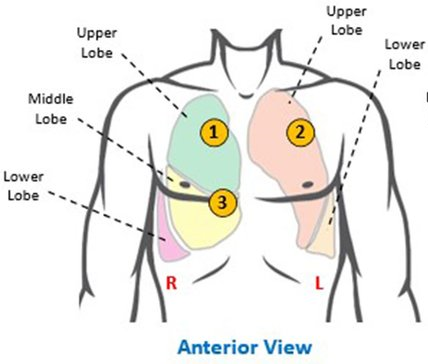
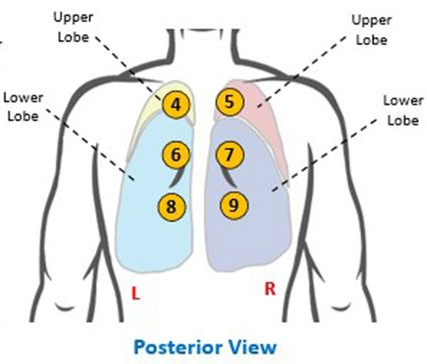
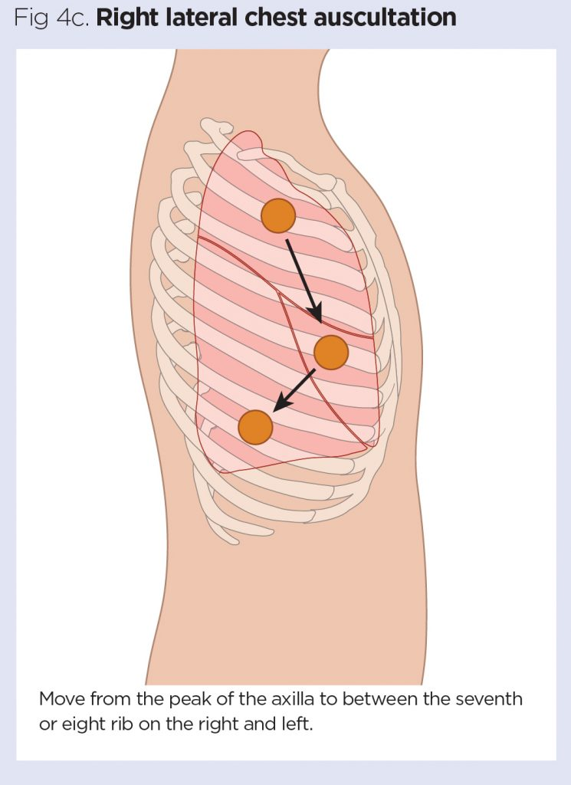

Front of the Chest

Place the stethoscope in the following positions on the front of the chest to capture lung sounds:
- Above the clavicles (supraclavicular area) on both sides.
- Second intercostal space, left and right of the sternum.
- Fourth or fifth intercostal space on both sides.
Back of the Chest

Position the stethoscope in the following locations on the back for optimal lung sound recordings:
- Below the scapulae (shoulder blades) on both sides.
- Mid-back on both sides of the spine.
- Lower back near the base of the lungs.
Sides of the Chest

Check for lung sounds on both sides of the chest:
- Upper side of the chest, beneath the armpit.
- Lower side of the chest, near the base of the ribs.